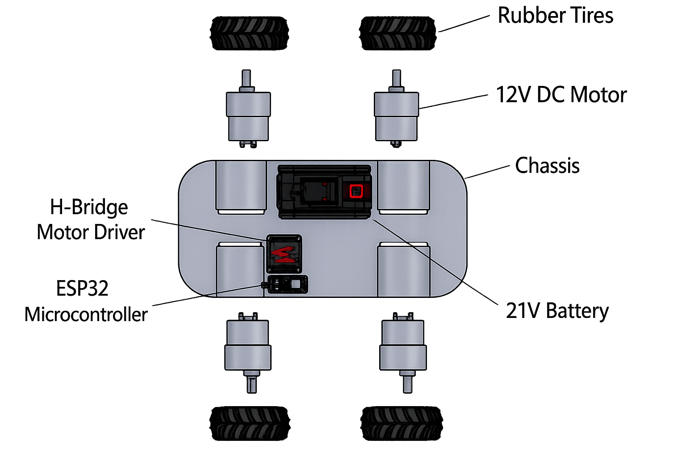
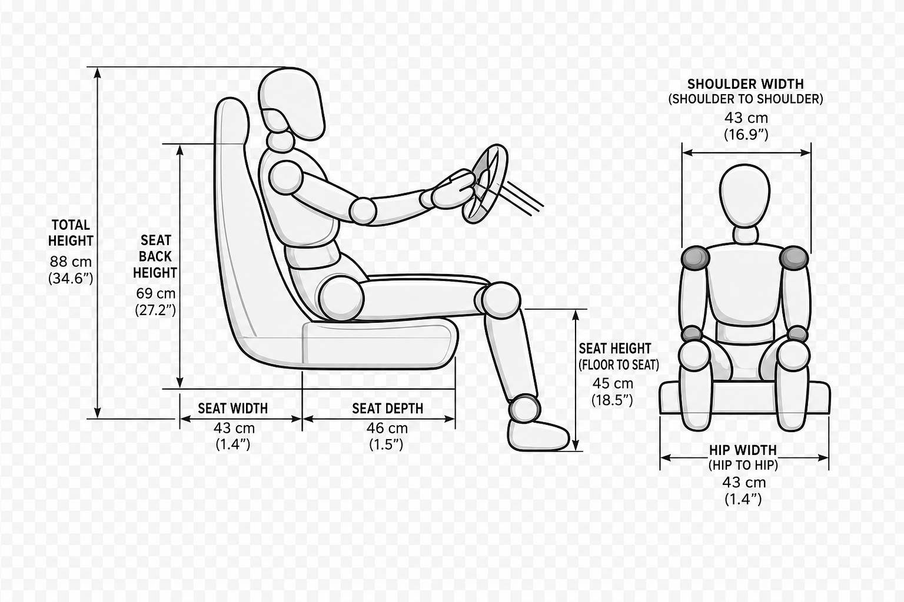
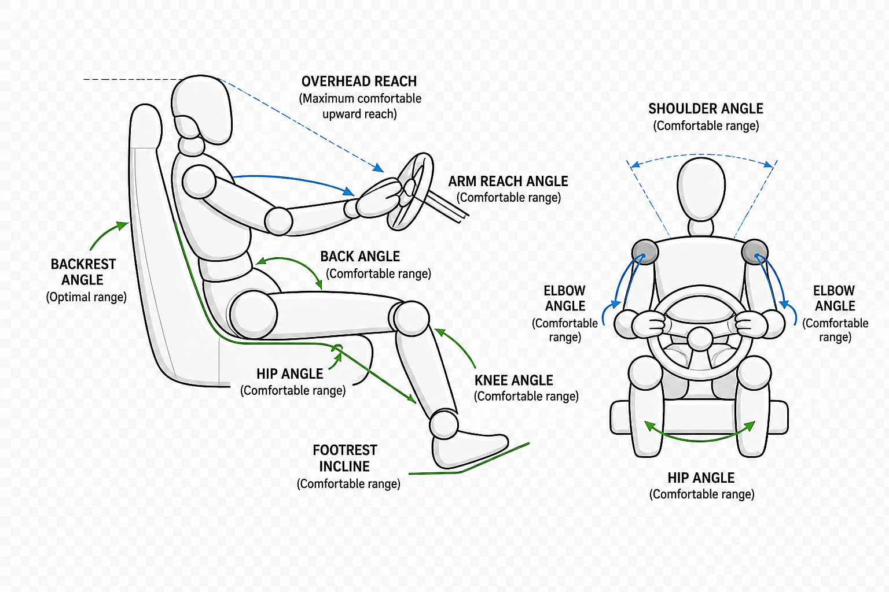

ESCUDERÍA HAWKJIN
Universidad Politécnica Bicentenario | Memoria Técnica e Informe de Ingeniería
Universidad Politécnica Bicentenario | Memoria Técnica e Informe de Ingeniería
El proyecto HAWKJIN comprende la investigación, conceptualización, diseño asistido por computadora (CAD), arquitectura electrónica/módulo mecatrónico, análisis aerodinámico mediante simulación numérica (CFD) y la evaluación ergonómica postural (RULA) para la construcción de un vehículo monoplaza de competición en la Universidad Politécnica Bicentenario.
A lo largo del desarrollo, el equipo integró normativas técnicas, electrónica embebida (ESP32) y estándares ergonómicos para asegurar un chasis estructuralmente eficiente, con potencia de tracción adecuada y un habitáculo ergonómico ajustado al piloto.
Puente H, Batería 21V y 4x Motores DC de 12V.
Coeficiente Cd ≈ 0.72 evaluado en túnel virtual.
Nivel de Actuación 2 (Riesgo Medio): Ángulos de confort optimizados[cite: 1].
Definición de cotas críticas (altura de asiento de 69 cm, ancho de hombros de 43 cm) y rangos posturales de confort.
Selección de microcontrolador ESP32, actuadores de 12V DC, etapas de potencia Puente H y alimentación de 21V.
Construcción del modelo volumétrico y simulación de resistencia aerodinámica al avance.
Estudio biomecánico para el piloto Fabián Cruz Clemente (Evaluador: José Emmanuel Martínez Chávez)[cite: 1].
El sistema de propulsión y control electrónico del proyecto HAWKJIN se basa en una topología distribuida de tracción en las cuatro ruedas impulsada por motores DC individuales, gestionados mediante señales PWM de alta velocidad desde el microcontrolador ESP32.

| Módulo / Componente | Especificación Técnica | Función en el Vehículo |
|---|---|---|
| Microcontrolador Principal | ESP32 (Dual Core, Wi-Fi / Bluetooth) | Procesamiento de mandos y modulación PWM |
| Módulo de Potencia | Driver de Motor Puente H (H-Bridge) | Inversión de giro y control de velocidad |
| Fuente de Alimentación | Batería de Li-Ion 21V | Suministro de energía general del sistema |
| Actuadores de Tracción | 4 Motores DC de 12V con Reductora | Transmisión directa a neumáticos de goma |
| Neumáticos | Llantas de goma (Rubber Tires) de alto agarre | Tracción y absorción de impacto superficial |
La estructura del vehículo cuenta con un chasis monolítico de líneas sobrias para optimizar el paso del aire. En las pruebas de túnel de viento computacional (CFD) se obtuvo un coeficiente de arrastre de Cd ≈ 0.72.


Se integraron esquemas geométricos detallados para validar que el habitáculo mantenga rangos articulares cómodos durante la conducción prolongada[cite: 1].


| Parámetro Antropométrico | Dimensión Nominal | Criterio de Confort |
|---|---|---|
| Altura Total Cabina | 88 cm (34.6") | Espacio despejado para casco de seguridad |
| Altura del Respaldo | 69 cm (27.2") | Soporte cervical y torácico completo |
| Ancho y Profundidad del Asiento | 43 cm × 46 cm | Distribución de presión en muslos y glúteos |
| Ancho de Hombros y Caderas | 43 cm (16.9" / 1.4") | Sujeción lateral sin restricción de movimiento |
| Altura del Asiento al Piso | 45 cm (18.5") | Ángulo de rodilla óptimo para pedaleras |
| Piloto Evaluado: Fabián Cruz Clemente (20 años)[cite: 1] | Evaluador: José Emmanuel Martínez Chávez[cite: 1] |
| Puntuación Final RULA: 3 (Riesgo Medio)[cite: 1] | Nivel de Actuación: Nivel 2 (Cambios recomendados)[cite: 1] |